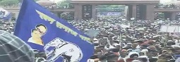

At least two people have died and 28 injured after a stampede at the Bahujan Samaj Party chief Mayawati's rally in Uttar Pradesh. Hundreds are said to be missing, among whom are several children.
Tragedy struck a huge BSP rally in Lucknow on Sunday when two aged women were killed and more than a dozen others injured during a stampede, police said. The incident happened when a large group was trying to force its entry from gate number 1 at the Kanshiram Smarak Sthal, the rally venue.
The two women fell down in the melee and got crushed by others. The injured were taken to the Lokbandhu Hospital where the condition of one person was said to be critical.
Thousands gathered at the venue to attend the rally to mark the 10th death anniversary of Bahujan Samaj Party founder Kanshi Ram. A police officer blamed overcrowding for the tragedy.